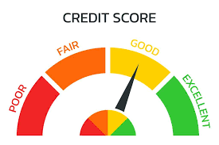

Credit is as it sounds. It is the credit you recieve for something you would refer to as integrity with your money. With good credit, there things you could by that you couldn't with bad credit: housing, cars, etc. require good credit to be bought.
Paying your bills on time is crucialy important. As I said credit is summed up to financial integrity. Will you, or will you not be responsible. There are also other ways to save your credit such as keeping old credit cards opened. And make sure you keep your cards active. Black people have often been seen stealing, and scamming for their money. Getting caught in the act could also completely plumit your credit. So stay away from crime.